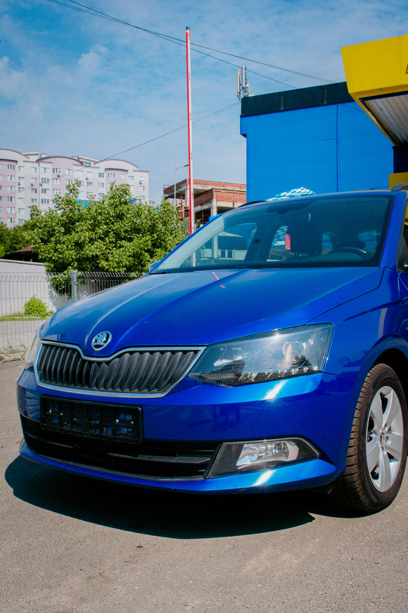
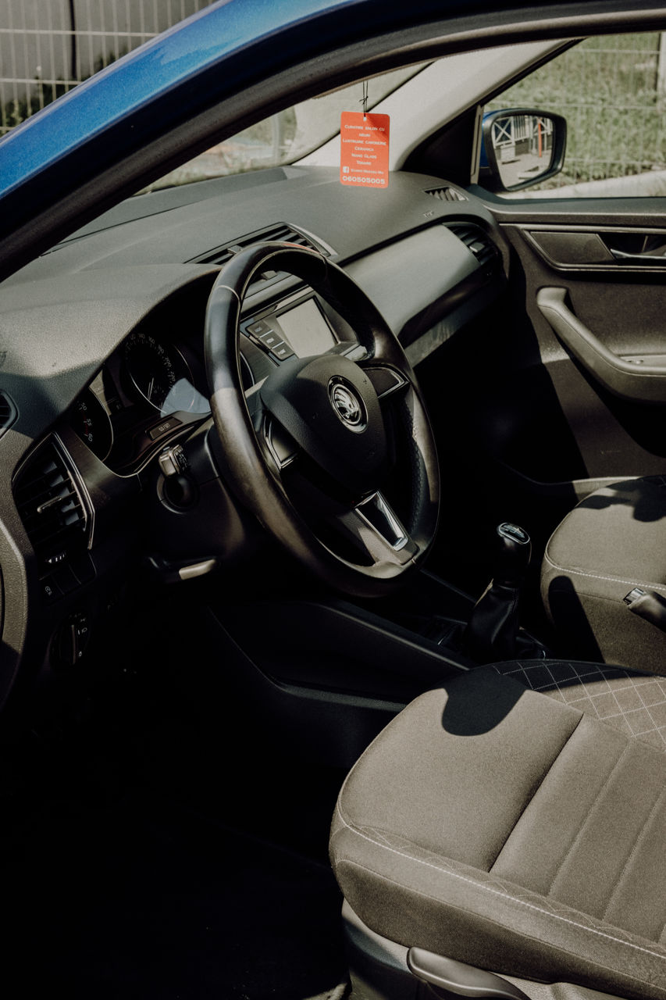

Терпение вместо крика
Большинство учеников приходит с одним страхом: «на меня будут кричать». Здесь не будут. Ошибки на первых занятиях — это нормально: спокойно разбираем, что произошло, и пробуем ещё раз.
Индивидуальные уроки на механике, Skoda Fabia. Без крика и нервов: объясняю, пока не станет понятно, и подстраиваюсь под ваш график. От лей за занятие.
Главная дорога — у вас
Большинство учеников приходит с одним страхом: «на меня будут кричать». Здесь не будут. Ошибки на первых занятиях — это нормально: спокойно разбираем, что произошло, и пробуем ещё раз.
Только индивидуальные занятия. Темп и программа под вас, а не под группу.
Работаете или учитесь — договоримся о дне и часе вместе.
Готовим площадку и городские маршруты, на которых сдают.
Шаг за шагом, без спешки
Посадка, зеркала, педали, сцепление. Трогаемся и останавливаемся на спокойной площадке.
Переключение передач, повороты, перекрёстки без плотного потока.
Кольца, перестроения, подъёмы, плотный трафик, парковка — там, где обычно страшно.
Отрабатываем площадку и улицы, по которым проходит экзамен. Разбираем типичные ошибки.
Вы садитесь за руль уверенно, а не «на удачу».


Ваша учебная машина
Компактная, лёгкая в управлении машина. На ней проще почувствовать габариты и не бояться парковки.
Научившись на механике, вы спокойно сядете и за автомат. Наоборот — сложнее.
С любой точки старта
Часов не хватило — добавим практики, пока не почувствуете себя уверенно.
Никогда не сидели за рулём — начнём с самого начала.
Давно не водили или боитесь города — вернём уверенность.
Прицельно готовим площадку и маршруты.
Ограничение — только по цене
Оплата за занятие, без скрытых доплат. Точную программу обсудим по телефону.
Конец всех ограничений
Боялась сцепления как огня. Через пару занятий уже спокойно трогалась в горку. Ни разу не повысил голос.
Брал дополнительные часы после автошколы. Прошли все сложные места маршрута — на экзамене всё было знакомо.
Права были 5 лет, но в город не выезжала. Теперь сама вожу ребёнка в садик.
Пункт информации
Стандартное занятие — 90 минут, как в автошколах. Точное время уточним при записи.
Зависит от того, с чем вы приходите. После первого занятия скажу честно, сколько понадобится именно вам.
Место встречи договариваемся по телефону — так, чтобы вам было удобно добираться.
Да. Возьмите одно занятие — посмотрите, подходит ли вам такой формат, и только потом решайте.
Нет, занятия только на механике. Зато после неё автомат осваивается за один вечер.
Позвоните или напишите в Viber/WhatsApp — подберём первый день и время.